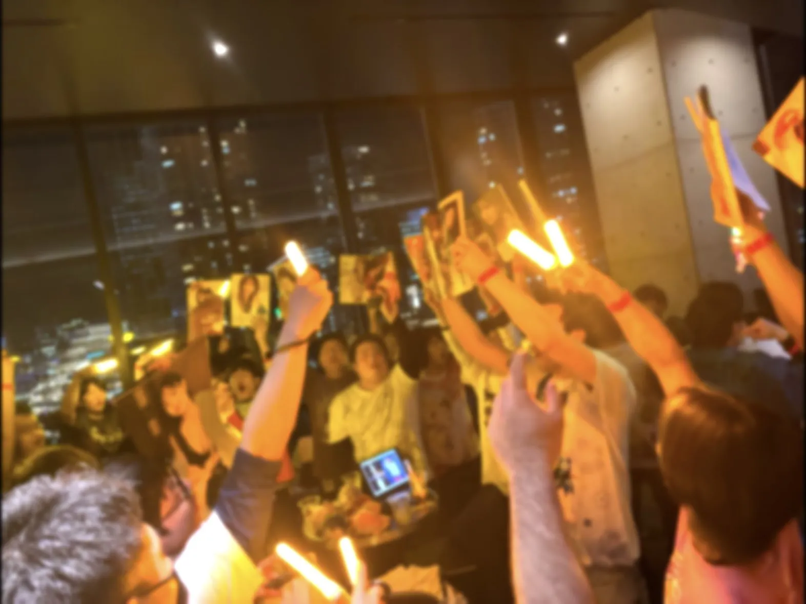
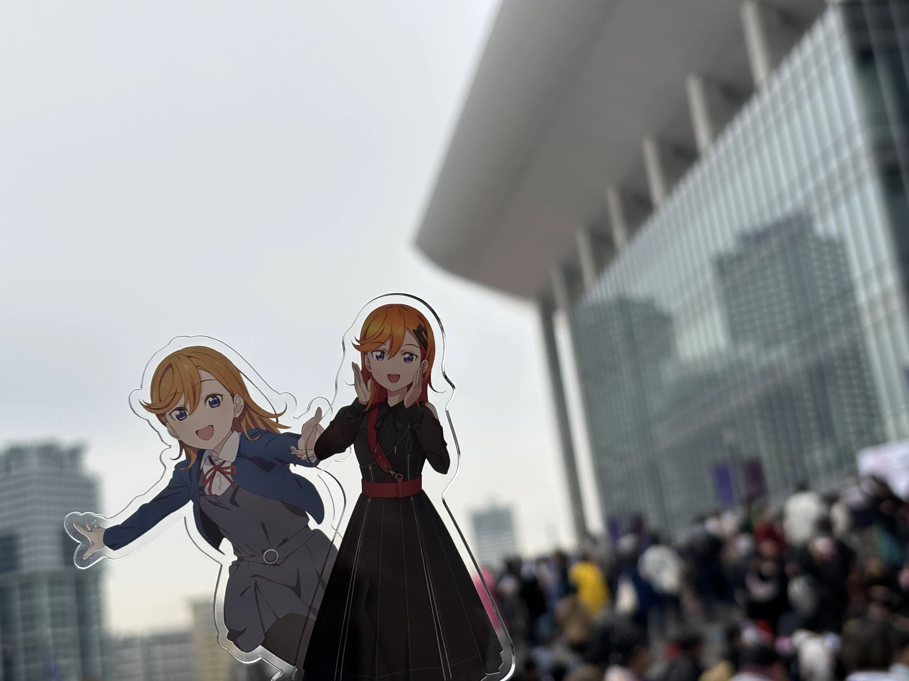
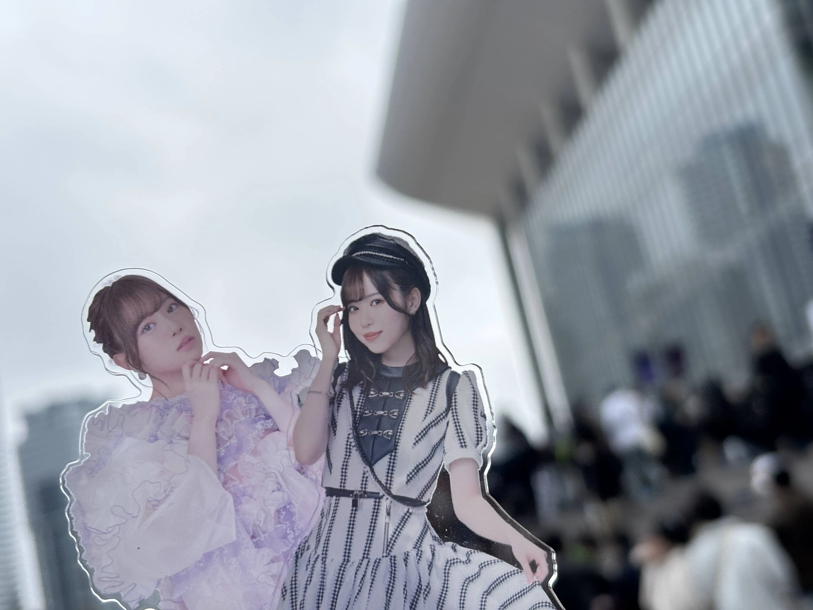
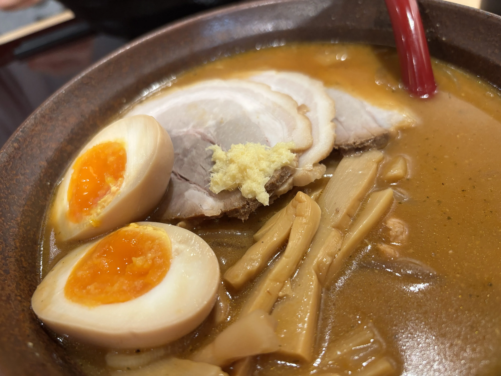

昨年10月、中国広州を皮切りに合同含む各ラブライブシリーズでアジアツアーが開催されていましたが、千秋楽公演の横浜公演に参加しました。
会場はKアリーナ。いつも通り前夜祭的なモノがバーで開かれていた為参加する事に。
会場の様子。何度も参加している為、この光景ももう慣れてきました…。
そして迎えたDay1。アクリルスタンド。
初めてμ'sを見たんですが迫力が凄かったです。
Day2。μ'sも凄かったですが、僕の大好きなTO BE CONTINUEDを特殊イントロや千秋楽バージョンで披露してくれたのが良かったです。
例の如くバーで一通り騒いでからヲタクと共にラーメン屋へ。
その後何故かヲタクと居酒屋で朝を迎えるという事をまたしてしまいました…。ライブ後は素直にお風呂に入ってご飯を食べて早く寝るべきという事をまた学びました。
ライブは楽しかったのでヨシ。